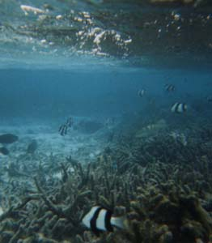

Day 1: Sunday 6 December
After spending the weekend in Brighton, we drove up the M23 to Gatwick. We parked in the South Terminal NCP car park. We arrived at the terminal at about 5pm and waited in the queue to check in. By the time we got to the front of the queue the chap told us there were no seats by the window left. I asked him to check seats 3A and 3B, the ones Lesley had arranged for us, and sure enough they had our names on them. It certainly pays to have friends in the industry!
After a quick walk around the Gatwick village area (the non-duty free side) we went through and into departures. We stocked up on batteries, films and the like and then decided that if we're buying ourselves a playstation for Christmas then we could get some games for it in duty free. This we did and bought "Tombraider III" and "Coolboarders 3", we also bought a second controller for it.
We stopped shopping and sat down at one of the eateries and had a couple of soft drinks. I rang home to find out who Hull City had got in the 3rd round draw of the FA Cup. Dad told me - Aston Villa away! yikes!
We boarded the plane and it became apparent that seat 3C was empty so this gave us a bit more space. We eventually took off and drinks were served so I had a Gin and tonic, Rich had a lemonade and we shared a packet of Pringles. Dinner was served at around 11pm (chicken type stuff) with a bottle of red wine. They showed "Primary Colours" on the screens and we tried to get a bit of sleep. I'd slept for a little while but woke up feeling quite ill and so got some water and sat quietly for a while. A bit dehydrated I think.
Day 2: Monday 7 December
We arrived at Bahrain at about 6am local time (3am English time and 8am Maldives time). We all had to get off the plane whilst it was refuelled. We wandered through Bahrain airport and sat and had something to drink. We got back on the plane and took off again at around 7:30am. The film on this leg was "Godzilla" which was okay, but very much a clone of "Jurassic Park". We were served a breakfast about an hour and a half before landing.
We landed at about 2pm local time and walked into the terminal with our immigration cards filled in. It took ages to clear that. We collected our bags and went and reported to the Hayes and Jarvis rep who we were. He sent us to stand number 21 who dealt with our island and who in turn sent us to stand 19 for transport to the island.
We waited for a little while for our transport, having a bottle of sprite in the mean time. We joined all the other people going to Bi ya doo and Villi Varu and were taken to the jetty and loaded into a motorboat. From the airport it was about a one hour journey to Bi ya doo. We got off the boat, checked that our luggage had come off the boat and went to the office. Here we were given a coconut to drink out of and given cards to fill in. We were allocated room 87 and 2 porters picked up our bags and took us there.
We unpacked our bags, had a shower and then went off for a look around the island. We also took our passports and stuff with us and put them into a safety deposit box. We then went back to our room and had a nap until dinner.

Day 3: Tuesday 8 December
Breakfast was a buffet style with an egg chef doing omelettes, and hash browns and toast being kept warm. We were given a table, which is ours for the rest of the week. We also chose our evening meal from the list.
We took a walk around the island back to the room and then sat on our patio and watched the sea. We went for our first snorkel and saw loads of fish. Oh and a shark (a black tip reef shark we think). It was great fun. The reef is vast. We explored around Passage 3 going out to where the reef started to deepen.
We came back in and got dried off and read our books for a while before going to lunch. Lunch was a buffet style, with quite a large choice.
After lunch I took my book and went and lay in a hammock and read for a while. Finished my book "Net Force" by Tom Clancy and Steve Pieczenik. Then back out for another snorkel. The tide was coming in now and the current was a bit stronger. We stayed in the same area as this morning, but went a bit further out. I tried a "duck dive" to see some stuff a bit clearer. After a while we came back out and dried out. We cracked open a beer and read a bit.
We had showers before heading off to dinner. Tonight we had a pasta in tomato sauce starter, a mixed curry with rice main course and madeira cake for dessert. All washed down with another beer.
After dinner we went to look on the notice board about the ferry times to Villi Varu, and then went and stood on the main jetty and watched the fish swimming around and the small sharks too. Around the jetty the reef looks to have a really steep edge. We had a look at the fish books in the gift shop but they are, un-surpisingly, very expensive at around $20.
We headed back to the room and collected the astronomy book, torch and binoculars, as the sky was clear and very full of stars. Incredible. Then back to the room to crack open a final beer before bed.

Day 4: Wednesday 9 December
It was raining and really windy and so we were a bit damp by the time we reached the restaurant for breakfast. Fortunately there was an umbrella provided in the room. After breakfast Rich collected the brolly from the stand and went to shake it. Unfortunately the handle fell off - oops!
The rain abated for a while so we went for a brief walk along the beach, watching some fish and some more black-tip reef sharks.
The chap came to do the cleaning, and brought us a new umberella. I asked him where the sun was, "Maybe tomorrow" he replied. The water was really rough too, so there was no point in trying to snorkel.
We both fell asleep and woke up just before lunchtime feeling a bit dozey headed. I dug my cagoule out of my bag and so, yet again, the cag comes in useful.
It rained for the rest of the day, so we just read, slept, ate and drank beer. There are worse things to fill a day with.
Day 5: Thursday 10 December
After breakfast we sat and read for a while. I finished reading "The Tortilla Curtain" by T. Coraghesen Boyle. We went for a walk along the beach, paddling in the sea. The sea was lovely and warm on the toes.
We sat outside our room for quite a while until the cleaner appeared. Once he'd done inside and wanted to clean the patio bit we decided to go and lay in the hammocks for a while. I was reading the Conde Naste Traveller magazine which had an article about "La Digue", an island amongst the Seychelles.
We went off for an early lunch and then sat around reading. The sun came out for a little while and so we kitted ourselves up and went for a snorkel. The sea was very choppy and it was hard work. We went out Passage 4 today, which has a sheer drop at the age of the reef, not as gradual as Passage 3. We took the camera out with us. We saw loads of fish again, and one weird long thin grey thing with huge eyes. Don't know what it was.
After about 30 mins we came back in, it had been really hard work due to the strong current. We both showered and had a celebratory beer and some shortbread. We sat and watched the waves for a while until we both fell asleep until the man came to see if we had any laundry to do (this happens each night, closely followed by the man with the insect spray).
After dinner we went off to the Main Jetty to see what fish-life was about. There were a lot of boats moored there tonight, 2 dhonis and 4 others. Looking over the side of the jetty we could watch the crabs eating something from the edge of the water. Also swimming around were some baby Black-Tip sharks, lots of other fish and a Sting Ray. The Sting Ray was really hard to see until it moved.
We then wandered back to the room, drank another beer and read some more.
Day 6: Friday 11 December
We decided to brave the rain and wander around the island to see if any of the other reefs and passages looked any calmer than the ones out of our window. As we were wandering we discovered that Passage 1 looked a lot calmer than either 3 or 4. We wandered back to our room and sat and read for a while, waiting for our breakfast to digest. When the man came to clean the room we decided to take a walk around to passage 1 and see how it looked. It looked okay and so we headed back to the room and collected our stuff for snorkelling.
We were out for about half an hour and saw a couple of Black Tip sharks and another of the weird pointy fishes with big eyes. Somehow or other we missed the passage and so were just snorkelling around the coral. A bit of a disappointment really. We got out, went back to the room and then headed off to lunch.
After lunch we fell asleep again for a while, and on waking decided to take a wander again. We walked across the island, walking past some of the staff buildings including a temple. We arrived at the football pitch and volleyball court (there were a group of people playing volleyball)
We stood and watched a few people diving and snorkelling around Passage 1 and decided that we'd worked out where it was (Passage 1 doesn't have a flag or pole like some of the others). We decided that we'd give it another go and headed off for the stuff. We found Passage 1 and were amazed at the drop, it was incredible, just like a cliff face. Lots of huge fish. After a while I had a mask problem and took in water, whilst trying to sort it out I grazed my knee on some coral which stung. We got out after this and headed back to the room for shower and beer.
We sat around reading before dinner and I finished reading "The Edible Woman" by Margaret Atwood. Then off to dinner. After dinner we went to the main jetty again and watched the Black Tip Sharks playing, there were also two Rays sitting on the bottom. We had a look at the fish charts that are around the diving centre and then headed back to the room. As I'm writing this a massive storm seems to have arisen.
Day 7: Saturday 12 December
We woke up this morning to the sound of yet more stormy weather. After breakfast we decided to brave the weather and went for a walk around the island. We decided that the route between Biyadoo and Villi Varu didn't look too bad.
So at 10:30 we stood on the main jetty with our flippers in one bag and towels, snorkels, masks etc in the other. We watched the boatmen push some large parcels wrapped in green cloth. These were loaded up into barrows and hidden in the island.
We got on the boat (we were the only two passengers) and sat down whilst the boat took us on our 5 minute trip to Villi Varu. We got off the boat and followed the signposts to the office. At the office we asked if they had a map of the island which they duly provided. We continued our walk around the island and then identified likely looking snorkel spots to match the Passages marked on the map.
We chose Passage 2 and prepared ourselves to go in. We snorkelled out through a narrow passage and found ourselves at a steep cliff face with loads of fish. Rich managed his first duck dives, and I did some too. Between us we finished off the film in the first underwater camera and decided it was time to head back in. Unfortunately the Passage wasn't marked with a flag or pole and so we had to try and find our way back in. Some others were just coming out and so we watched where they came out and headed there. Somewhere along the way I got lost and was in amongst the coral with the water getting shallower. I had to stop and try and work out where the passage was. So I stood up disturbing as little coral as possible and watched Rich snorkel his way out. I waited till he stopped to look for me (he'd been following someone else with a yellow pipe) and then I tried to join the passage by snorkelling between the bigger bits of coral. I caught my ankle on a chunk on my way out which really hurt and bled quite a bit once I'd got out.
After this excitement we dried ourselves off, put on t-shirt and shorts and wandered back to the jetty to get the boat back. As we walked down the jetty we could see them mending one of the guardrails. Just before 12:30 a man appeared with a barrow with another 3 large green wrapped parcels. This time it was obvious what they contained, towels. The ferryboat is obviously also the laundry boat. So, at 12:30 the engine was started and one other person and us were ferried back across to Biyadoo. The ferry had to moor itself next to a delivery boat and so we had hop across the other boat to get to land. We headed straight back to our room so we could put our stuff down and change into dry clothes, our swimmers were still somewhat damp. As we were changing another batch of stormy weather appeared and the rain came down in torrents. We grabbed the room brolly and my cag and made our way to lunch.
After lunch we had a rest for a while before heading off for a walk around the island. We ended up sitting at the bar having a couple of beers which was most pleasant. After our drinks we wandered back to our room and collected the frisbee. We stood on the beach outside our room and played frisbee in high winds, which made it really interesting (and wet as it kept landing in the sea). After a while we gave up, returned to our room and read our books for a while before dinner.
After dinner we stopped off at the office to find out how much a phone call to the UK would be (it's Rich's Mum's birthday) - $20 for 3 minutes. Rich decided that was too much. We went to have a look at the Main Jetty and stood and watched the BlackTip sharks again, the heron was around too. We then walked around the rest of the island back to the room, taking a detour to see if there were any interesting fish life off the jetty next to the boatyard. The lighting isn't as good and so nothing could be seen. We ended up back at the room and relaxed for the rest of the evening.
Day 8: Sunday 13 December
This morning we woke up to a storm-free sunny day. After breakfast we sat around and read our books for a while, until the P-20 had had it's hour and a half to soak in and for breakfast to settle. Then it was snorkel time.
We wandered between Passages 3, 4 and 5 to try and choose which one to go out of. We chose Passage 5 as we hadn't been out of it before, and it had a really clear entry point - a yellow flag flying in the breeze. We put our gear on and went out the Passage and snorkelled around for about 20 minutes. It wasn't all that exciting, only a few fishes about so we decided to move on. We walked up the island to Passage 4. We sat on the shore and put on our fins in the company of a really small Black-Tip Shark and then swam out towards the passage. There were loads of fishes and we both did some duck-dives to see more. There was a whole school of little fishes being herded by 3 or 4 bigger fishes. They were turning from one direction to the other, occasionally speeding up and zooming off. We couldn't decide whether it all meant there was a predator about. After about half an hour we decided to come back in having really enjoyed that one. We went back to the room and had showers at which point we discovered that despite the P-20 lotion we were both sunburnt on our backs, shoulders and backs of legs.
We went off for lunch and then took it easy for a couple of hours. Later we went for a walk around the island with the cameras trying to capture some of the colours and views. When we got back to the room we covered ourselves in Waterproof factor 25, put t-shirts over our swimmers and went for a snorkel to Passage 3. We only stayed out for about 15 minutes but saw some huge fishes. This passage wasn't as good as we'd remembered which means that so far Passage 4 gets the "Richard & Jane Best Snorkel" award.
We came back in, showered and then starting rubbing in the aftersun. We then had a celebratory beer and read our books until dinnertime. At lunchtime, amongst the fruit there had been some small bananas which had a wonderful flavour. I'd brought one back to the room and so ate my celebratory banana. We had a short break to listen to the "World Service" sports news to discover that the 3rd match of the Ashes series appears to be going Australia's way.
After dinner we went along to the office to get a $20 note changed so we can leave tips. Technically, we are supposed to leave $10 for Hassan our waiter, whose service hasn't been the best, and $10 for the Room Boy, who has been great, always smiling. Our $20 was changed into 20 $1 notes and so we may decide to do a $9/$11 split.
Day 9: Monday 14 December
We woke up earlier than usual and headed off for breakfast. We gave Hassan his tip, we decided on $9 in the end. Then we went to the office to collect our stuff from the safety deposit box and headed back to the room to pack the bags.
We decided to give a tip for boy who has brought us water to wash the sand off our feet. We gave him $2 and he seemed delighted with it. We give a tip for the boy who cleaned the room of $11. He continues smiling.
At 11:15 we left the room, left the luggage outside door as instructed when we called the front desk "They will be collected by the boys". We paid the porters $2 per bag.
We went to the front desk and checked out - the cost of extras during week was $92. Get a $50 note changed into smaller notes for the airport.
The boat arrived and our luggage was put on board. Whilst we were standing waiting, we were handed a white cardboard box containing a packed lunch for the journey. Excellent parting gesture.
The journey to the airport was about an hour, an out of the window we were watching some flying fish. They are incredible as they really travel some distance out of the water.
We arrived at the Airport and paid our Airport tax of $10 each. We went through to check-in. Our prebooked seats 3A & 3B were there waiting for us. We then went straight through to departures. We wandered around the duty free shops and ended up buying 2 calendars as presents for our parents.
We boarded the plane and had to wait a while for some of the passengers, apparently a connecting seaplane was late arriving. We had drinks from the bar of a sparkling water and a pineapple juice. We settled back for the flight and watched "Father Ted", and then "Armageddon" on the screen.
Flying over Oman and other parts of the Middle East I was watching the sunset out of the window. It was beautiful. A rainbow of colours across the horizon with a single star visible.
We stopped at Bahrain airport and spend some time in duty free buying Gin, Vodka, 2 CDs and 2 bottles of "Highland Spring" water imported from Scotland.
We re-boarded the plane had 2 G&Ts before watching "The Mask of Zorro" on the screen.
We landed at Gatwick at around 11pm UK time. We went to the baggage collection point to discover that ours was almost the last luggage off the plane, then through customs and off to collect the car and drive back home.

|
|